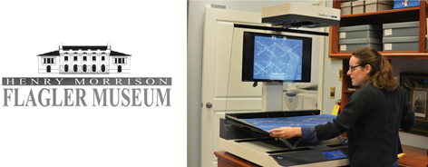
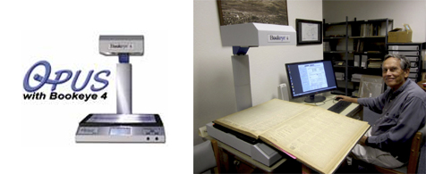
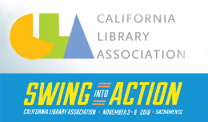

Lyon, France
"Composé d’un scanner à livres, d’un scanner à feuillets (recto-verso automatique) d’un écran de commande tactile et d’un écran de visualisation, le système KIC ne permet pas d’impression directe."
"Installé dans le Salon, le scanner peut être utilisé librement sans authentification, dans le respect des droits d’auteur. Un mode d’emploi est à votre disposition.".
Palm Beach, Florida
The Flagler Museum was recently awarded several generous grants that will significantly impact its ability to preserve and interpret its collections.
The Mosaic Foundation (of R. & P. Heydon) the SmARTBiz Grant Program ( a collaborative Council of Palm Beach County), and The Fortin Foundation of Florida have all provided funding to support the Museum’s purchase of the specialized Bookeye 4 V1A Professional Scanner. This high resolution machine can scan fragile books and documents from the Museum’s collections while safely holding them in place in a special cradle. The specialized scanner will allow the Museum to greatly enhance its collections research and interpretation capabilities while meeting professional collections care standards.
Read the original article in the Flagler Museum Magazine here.
Lexington, Kentucky
With a KIC station already in place in the Law Library, the University of Kentucky has now added two BSCAN ILL stations for their interlibrary loan department and a second KIC station to serve their students with the latest in walk-up scanning in the Margaret I. King Library..
Greenville, South Carolina
The new KIC system is located in Hughes Main Library. With its scanning area of 24' x 17' it includes an adjustable cradle to support fragile items at various angles. The system has an advantage of software upgrades to add color and to increase resolu tion to up to 600dpi in the future.

Martinez, California
Volunteers at the history center want to ensure the news is carefully preserved for the public for years to come.
Enter the Bookeye 4 -- a state-of-the-art scanner that has blended traditionally-archived news with modern technology. The county history center now has the best of both worlds as they continue to provide the public with access to news archives, thanks to the large-scale scanner that can now preserve the images of the oldest and most fragile newspapers, said Priscilla Couden, executive director of the Contra Costa County Historical Society.
Manhattan, Kansas
Check it out at the Veterinary Medical Library...
Lifelines - a newsletter of the College of Veterinary Medicine highlights some updated features on the new scann er that include a V-cradle that allows scanning from books in a natural position. A foot pedal enables users to scan books almost as fast as pages can be turned. The new scanner also adds the capability to send scans to FTP, network drive, cloud storage or directly to mobile devices such as smart p hones and tablets via Smart Dock or QR Code.
Nashville, Tennessee
Lila D Bunch Library at Belmont University introduces new KIC Click table top scanner.
"Easy, fast, high-quality scans of documents and photos. Simply scan, modify and save scans as Searchable PDF, Quick PDF, JPEG, PNG, RTF or Audio file to USB or send to your Google Drive or Email."
-

CLA Sacramento, CA
Come visit our booth for a personal demonstration and learn how to bring your library into the digital age.
-
NYLA Saratoga Springs, NY
Come visit our booth for a personal demonstration and learn how to bring your library into the digital age.
-
IFLA Columbus, OH
Come visit our booth for a personal demonstration and learn how to bring your library into the digital age.
-
SAA Atlanta, GA
Come visit our booth for a personal demonstration and learn how to bring your library into the digital age.
-
AALL Chicago, IL
Come visit our booth for a personal demonstration and learn how to bring your library into the digital age.
-
ALA Orlando, FL
Come visit our booth for a personal demonstration and learn how to bring your library into the digital age.
-
MLA Toronto, Ontario
Come visit our booth for a personal demonstration and learn how to bring your library into the digital age.
-
TxLA Houston, TX
Come visit our booth for a personal demonstration and learn how to bring your library into the digital age.
-
PLA Denver, CO
Come visit our booth for a personal demonstration and learn how to bring your library into the digital age.